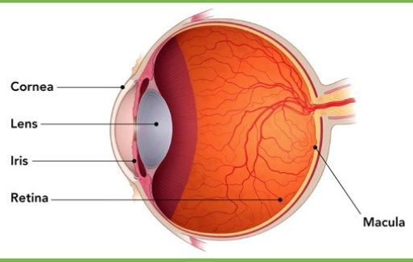

Understanding AMD
The more you know about Age-Related Macular Degeneration (AMD), the easier it is to understand the CentraSight treatment program. AMD is a disease of the retina. It is the most advanced form of age-related macular degeneration and the leading cause of irreversible vision loss and legal blindness in individuals over the age of 60.
Some degeneration of the macula is normal during aging. In early, less advanced Age-Related Macular Degeneration, visual symptoms are generally mild and may or may not impact vision-related activities. However, advanced stages of Age-Related Macular Degeneration can result in severe loss of sight in the central part of vision. This is often referred to as a central vision “blind spot”. This blind spot is different than the visual disturbances experienced with cataracts (clouding of the eye’s lens) and is not correctable by cataract surgery or eyeglasses. Side vision, or peripheral vision, is not affected by Age-Related Macular Degeneration, but is too low resolution (blurry) to make up for lost central vision.
With End-Stage Age-Related Macular Degeneration, the macula reaches a point where central vision is lost in both eyes, making it difficult to perform everyday tasks. End-Stage AMD can develop from the dry form of Age-Related Macular Degeneration or the fast-progressing wet form. There are no drugs or treatments that can cure End-Stage AMD. The damage to the macula is permanent.
Left: Normal Eye
Right: Eye with AMD
AMD affects a part of the eye called the macula. The macula is the most important part of the retina. It is responsible for “straight ahead” detailed vision. The macula makes it possible to see well enough to perform everyday tasks such as reading, watching television, recognizing faces and colors, seeing objects in detail, and safely walking up stairs.

Age-related macular degeneration (AMD) is a disease of the retina in which light sensing cells in the central area of vision – the macula – can be damaged and stop sending images to the brain. In advanced AMD, this can result in permanent loss of central vision.